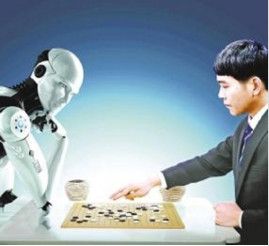

Our society is more technologically advanced than ever. We have prototyped cars that can drive by themselves, but without smart vision, they cannot really tell the difference between a crumpled paper bag on the road, which can be run over, and a rock that size, which should be avoided. Drones can fly over massive land, but don't have enough vision technology to help us to track the changes of the rainforests. Security cameras are everywhere, but they do not alert us when a child is drowning in a swimming pool. We're very much blind, because our smartest machines are still blind.
Reason
"Why is this so hard?" you may ask. Cameras can take pictures like this one by converting lights into a two-dimensional array of numbers known as pixels, but these are just lifeless numbers. They do not carry meaning in themselves. Just like to hear is not the same as to listen, to take pictures is not the same as to see, and by seeing, we really mean understanding. In fact, it took Mother Nature 540 million years of hard work to do this task, and much of that effort went into developing the visual processing apparatus of our brains, not the eyes themselves. So vision begins with the eyes, but it truly takes place in the brain.
Goal
Computer vision and machine learning is part of the general field of artificial intelligence. Little by little, we're giving sight to the machines. First, we teach them to see. Then, they help us to see better. For the first time, human eyes won't be the only ones pondering and exploring our world. We will not only use the machines for their intelligence, we will also collaborate with them in ways that we cannot even imagine.
So ultimately, we want to teach the machines to see just like we do: naming objects, identifying people, inferring 3D geometry of things, understanding relations, emotions, actions and intentions. You and I weave together entire stories of people, places and things the moment we lay our gaze on them.
Future
When machines can see, doctors and nurses will have extra pairs of tireless eyes to help them to diagnose and take care of patients. Cars will run smarter and safer on the road. Robots, not just humans, will help us to brave the disaster zones to save the trapped and wounded. We will discover new species, better materials, and explore unseen frontiers with the help of the machines. Give computers visual intelligence and create a better future for the world.
Coexistence for Humans and AI

We are now in an amazing age，AI (artificial intelligence) is dramatically changing our world. The implementation of AI will bring tremendous wealth, unprecedented wealth: 16 trillion dollars, according to PwC, in terms of added GDP to the worldwide GDP by 2030. It will also bring immense challenges in terms of potential job replacements. Whereas in the Industrial Age it created more jobs because craftsman jobs were being decomposed into jobs in the assembly line, so more jobs were created. And it's not just in factories, but truckers, drivers and even jobs like telesales, customer service and hematologists as well as radiologists over the next 15 years are going to be gradually replaced by artificial intelligenc.
So how do we differentiate ourselves as humans in the age of AI?
Really AI is taking away a lot of routine jobs, but routine jobs are not what we're about. Why we exist is love. When we hold our newborn baby, love at first sight, or when we help someone in need, humans are uniquely able to give and receive love, and that's what differentiates us from AI. When AlphaGo defeated the world champion Ke Jie, while Ke Jie was crying and loving the game of go, AlphaGo felt no happiness from winning and certainly no desire to hug a loved one.
Compassion, love, or empathy are things that AI cannot do. So as AI takes away the routine jobs, I like to think we can, we should and we must create jobs of compassion. You might ask how many of those there are, but I would ask you: Do you not think that we are going to need a lot of social workers to help us make this transition? Do you not think we need a lot of compassionate caregivers to give more medical care to more people? Do you not think we're going to need 10 times more teachers to help our children find their way to survive and thrive in this brave new world?
A blueprint of coexistence for humans and AI
AI will come and take away the routine jobs and in due time, we will be thankful. AI will work with humans as analytical tools that humans can wrap their warmth around for the high-compassion jobs. And we can always differentiate ourselves with the uniquely capable jobs that are both compassionate and creative, using and leveraging our irreplaceable brains and hearts. So there you have it: a blueprint of coexistence for humans and AI. It comes to free us from our regular work, and it comes to remind us of what makes us human. So let's choose to embrace AI and love each other.
Machu Picchu
Introduction
Machu Picchu is a 15th century Inca castle located in the Eastern Cordillera of southern Peru. It is considered to have been the estate for the Inca emperor Pachacuti. The Spanish didn't know about it during the colonial period and remained unknown to the outside world until American historian Hiram Bingham brought it to international attention in 1911.
What attracts me
What attracts me most to Machu Picchu is its construction. Machu Picchu was built without the use of mortar, metal tools or wheels and is a marvel of human creation. These stones are precisely cut and wedged tightly together, and no credit card can be inserted between them. In addition to the obvious aesthetic benefits of this building style, there are engineering advantages. Peru is a country with unstable earthquakes. Machu Picchu itself was constructed on two fault lines. When an earthquake occurs, the stones in the Inca buildings are called "dances," that is, they bounce back in the tremor and then return to their original position. Without this method of construction, many of Machu Picchu's most famous buildings would be collapsed long ago. No one has yet understood how the Inca civilization can carry a huge stone weighing 20 tons to the top of Machu Picchu. We may never know some of this places hidden secrets, but that’s why it is so attractive.
COVID -19:When is the Peak?
Rapid increase
The cumulative number of people diagnosed with new coronavirus in the United States has exceeded 470,000, and more than 17,000 have died. In the past two days, the number of new diagnoses per day has continuously exceeded 37,000, and the number of new deaths has been around 2,000. Since March 23, the United States has added more than 10,000 daily diagnoses for three consecutive weeks.
According to statistics from the Johns Hopkins University Coronavirus Research Center, at 10:00 p.m. Eastern Time on the 9th, 462,135 cases of new coronary pneumonia were diagnosed in the United States, an increase of 37,190 cases from the previous day. A total of 16513 deaths occurred, an increase of 1984 cases from the previous day. New York State, the center of the epidemic, added 799 deaths on the same day, setting a record high in a single day.
The beginning of the inflection point
Looking at growing numbers every day, I always wonder when will the peak of this epidemic come? The number of newly confirmed diagnoses and deaths in the United States has fluctuated while hitting new highs. The model of the University of Washington research institution frequently cited by the White House predicts that the number of new deaths and the bottleneck of medical resources will peak this weekend, and then gradually decline.
Based on the “social isolation” policies and the latest data adopted by the states, the model continuously lowered the previously predicted values on Monday and Wednesday, including the number of beds and ventilators required during the peak period. The data shows that there are still 9047 ICU beds and 16,524 ventilator gaps in the United States. The model also reduced the cumulative number of deaths as of early August from 81,766 to 60,415.
Be hopeful
The new coronavirus has brought pain, suffering and death to human beings. No one knows when the outbreak of COVID-19 will end, we expect the beginning of the inflection point. Although many news provide optimistic outlooks, the cure is hard to find. Even though we are amongst one of our darkest hours but all you can do is be hopeful.